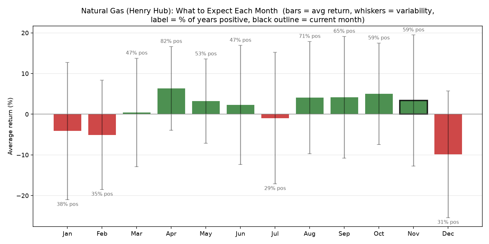
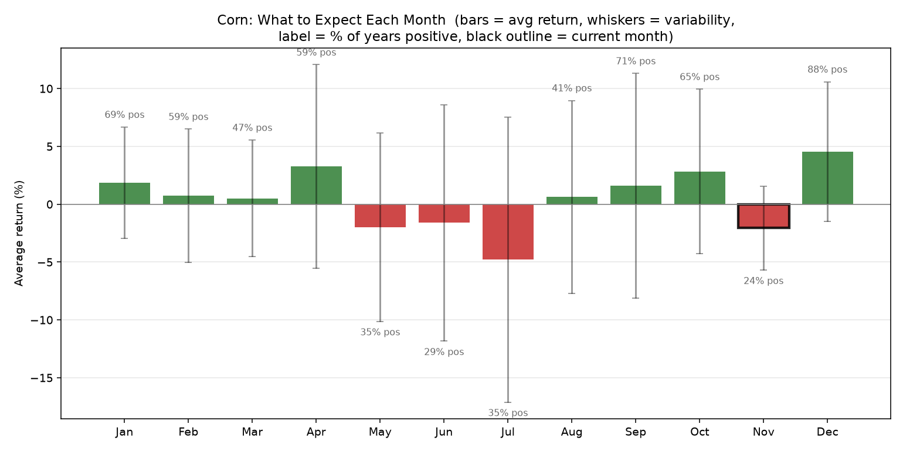
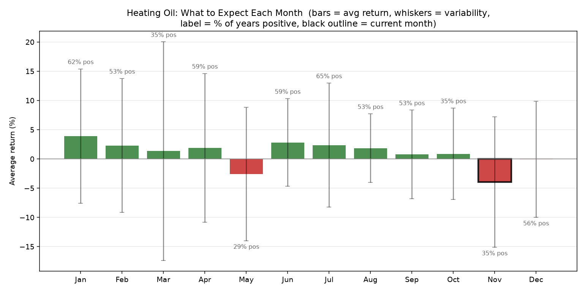
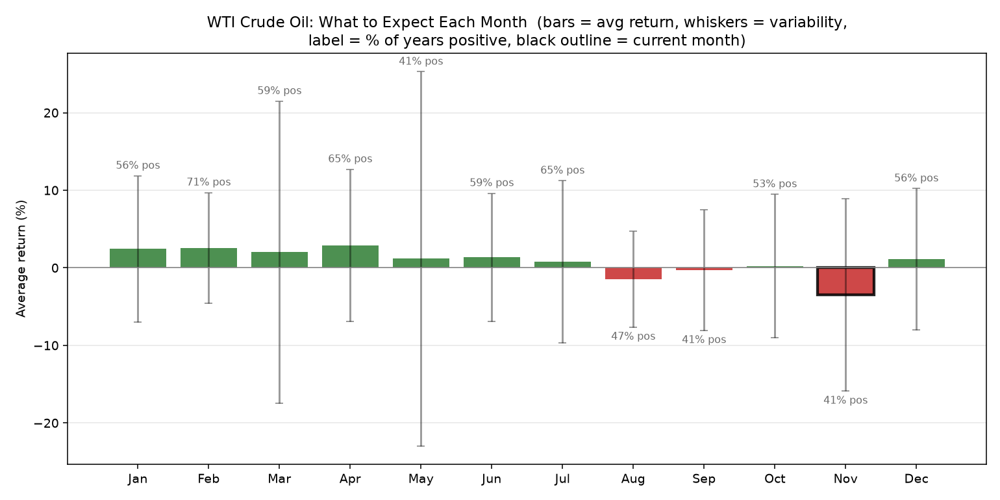
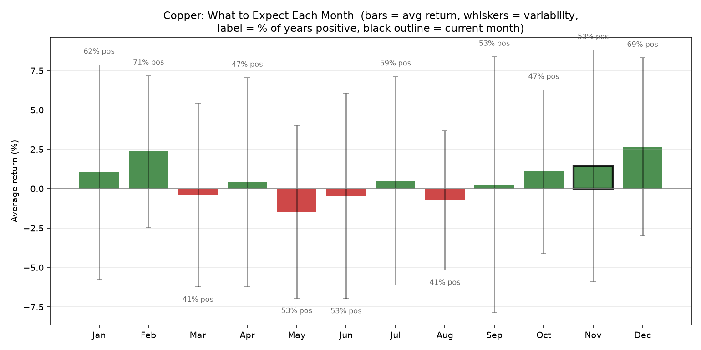
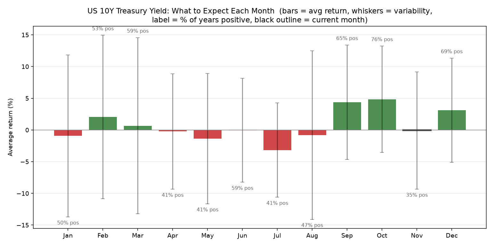

| Instrument | Avg return, Nov | Historically positive | Years of data | Read |
|---|---|---|---|---|
| Natural Gas (Henry Hub) | +3.4% | 59% | 17 | strong seasonal tilt up (+3.4% avg, 59% of years positive) - mixed/unreliable |
| Corn | -2.1% | 24% | 17 | mild seasonal tilt down (-2.1% avg, 24% of years positive) - reliable |
| Heating Oil | -4.0% | 35% | 17 | strong seasonal tilt down (-4.0% avg, 35% of years positive) - mixed/unreliable |
| WTI Crude Oil | -3.5% | 41% | 17 | strong seasonal tilt down (-3.5% avg, 41% of years positive) - mixed/unreliable |
| Copper | +1.5% | 53% | 17 | mild seasonal tilt up (+1.5% avg, 53% of years positive) - mixed/unreliable |
| US 10Y Treasury Yield | -0.1% | 35% | 17 | flat seasonal tilt down (-0.1% avg, 35% of years positive) - mixed/unreliable |





